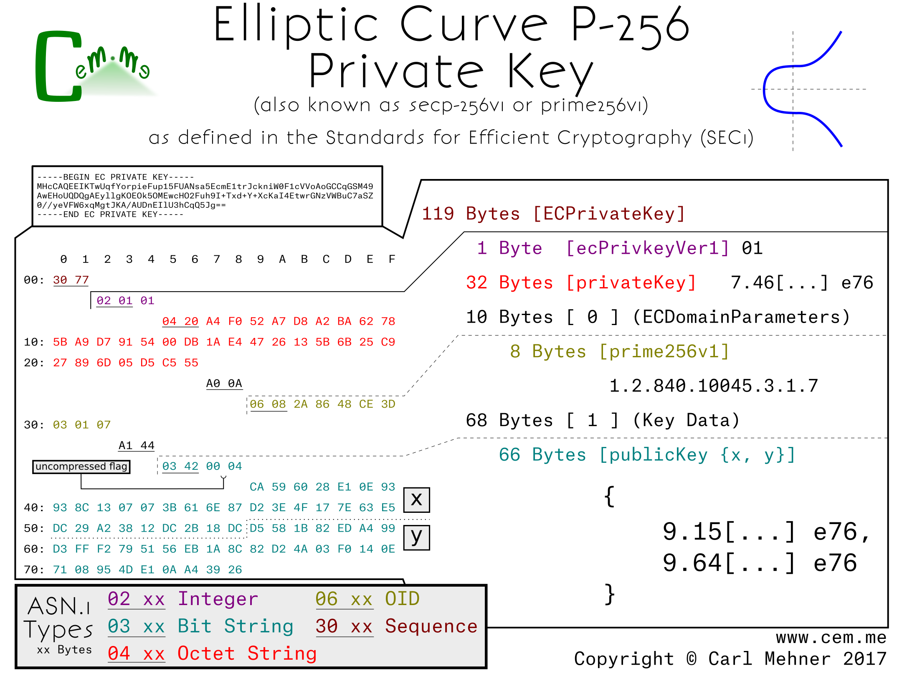
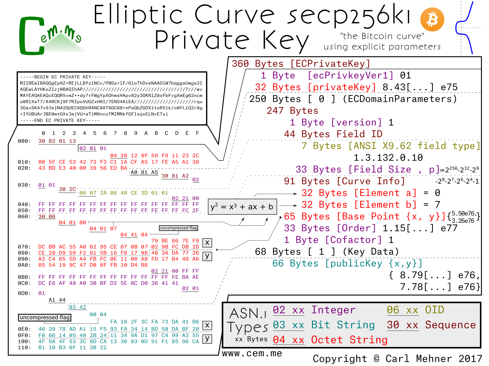

Elliptic curve cryptography (ECC) began steadily increasing in normal use across the Internet over the past few years The number of TLS sessions tracked by WikiMedia hovered around 96 percent on average over the course of 2016. Nearly everyone uses ECC every day on the Internet. In keeping with this trend, several people have put up some very good tutorials and talks about ECC.
Nick Sullivan wrote an ECC primer when Cloudflare started using certificates that make use of ECC that you can read here.
Andrea Corbellini wrote a set of blog posts explaining deeper the way that the ECC maths (addition, multiplication, etc) work on curves with gif visualizations in part 1 and how that works on finite fields in part 2.
Martijn Grooten gave a great intro to ECC here including a good explaination on the way private keys work and why ECC is faster for point multiplication than for "division", which is essencially the crux of why ECC is considered secure.
Those resources all tend to deal with the math and theory behind ECC, this post is more about how keys are encoded for use in day-to-day use across the Internet and how the different parts of the keys fit into the math behind ECC.
Similar to RSA keys, ECC keys are encoded for storage and transmission using ASN.1 and the binary ASN.1 values are sometimes then encoded further as base64. There are a few different ways to encode EC keys, but one of the most common (currently) is SEC1 (Standards for Efficient Cryptography, specification 1).
This first example is the Curve P-256 encoded to explicitly include all the P-256 parameters from the SEC1.

The entire encoded key is wrapped in an ASN.1 sequence the same as RSA keys. Next, a version number to allow for future changes in the way keys are stored. (So far, it doesn’t look like this will be used any time soon. Incrementing the version number was planned for RFC 5480, but did not make it past the draft process.)
After the the version field, is the private key. For elliptic curves, the private key is simply a random number, in this case, 256 random bits.
The next section is the elliptic curve domain parameters, which contains the public, agreed upon, parameters for the particular curve. In this section, we have the typical version number at the start, followed by the OID (Object IDentifier) stating that this information is for an ANSI X9.62 type curve and the field size of that curve. The field size is the length, in bits, of the finite field that makes up the plane in which the elliptic curve operates.
The next part of the explicit parameters is the Curve Info, this section tells the way to initialize the curve equation before beginning the cryptographic calculations. The first two elements of this section are 'a' and 'b', the multiplicand and addend, respectively, of the curve equation, y^2 = x^3 + ax + b. The final piece is the seed value; this is the controversial part of P-256, any discussion around backdoors or weakness tend to center around this discrete value. The seed value is "random", then is hashed and run through an algorithm to get the addend "b" encoded previously. It is included in the curve parameters for verification purposes. The algorithm for verification and generation are found in the NIST Digital Signature Standard.
Following the curve parameters is the base point, the starting point for the math involved with the curve. Harkening back to Martijn's talk on ECC, at about the 10 minute mark, you can see where this base point come into play (or you could wait a few more paragraphs). The base point is encoded in a different way than most of the other cryptographic values we use in certificates. First, all the information is retrieved from an octet string.
The first byte of this octet string is a flag to notate whether or not the base point is encoded in the (not often used) compressed form (0x02 or 0x03) or the uncompressed form (0x04). If the flag is for the uncompressed form, as it is in this example, the remainder of the octet string is evenly divided into two parts, the x-coordinate and the y-coordinate. If the flag is set to use a compressed form, the value depends on the value of the y-coordinate (0x02, if even and 0x03 if odd), the remainer of the octet string is the x-coordinate.
The x-coordinate in the compressed form the y-coordinate simply calculated based off of the curve parameters. The order, a prime value, and the cofactor follow as the last of the domain parameters for the curve. Multiplying the order and cofactor give the total number of available points that are on this curve.
The final part of the ECC key is the data describing the public key. It is encoded in the same manner as the basepoint from before; compression flag, x-coordinate, then (if needed) the y-coordinate. The public key here is used in a similar fashion to the public key in RSA cryptography, however, instead of being generated by multiplying two primes, it is created by adding the basepoint to itself the number of times, as specified in the private key.
When using a curve encoded without the explicit parameters included, the result is much shorter. Also, since curves, like P-256 and other "NIST Curves", are widely supported in crypto libraries and software packages, the explicit parameters are typically left out and instead replaced with the named curve's identifier. For P-256, the OID is 1.2.840.100.45.3.1.7; this simple set of numbers replaces all of the domain parameters previously described.

Other curves standardized prior to around 2010, such as the ones used in OpenSSL 1.0.1 and earlier, follow these forms of either the, little used, explicit curve or the curve forms with implicit parameters. Examples include other NIST curves or the Brainpool curves.
One example of an alternate curve using a very similar form is the secp256k1. This is the elliptic curve used in Bitcoin. The only difference between the non-explicit parameter p-256 and secp256k1 is the OID used to identify the curves (and the public / private key pair).

When the explicit parameters are added to the secp256k1, it is easier to see the differences between it and P-256. The first difference is the field size: in 256k1, the field size is slightly larger than the P-256 field. Next, the main difference; constants a and b in this curve are 0 and 7, respectively rather than the much larger a and b from P-256. The k in secp256k1 stands for Koblitz, named after Neal Koblitz, a University of Washington professor. Koblitz curves are known for their speed as well as the lack of a seed of random/unexplained origin. The remaining elements very similar to the p-256 curve.

The next post, ECC (Part 2), will have some newer curves that have been recently gaining popularity and standardization. To make sure you see that when it is published, subscribe on Feedly, or anywhere else using RSS